已核对配置与资源、完成完整数据恢复并测试线缆计算脚本；整理后的工程仍需在实际平台中复测。
下载完整模型与数据资源最终运行截图
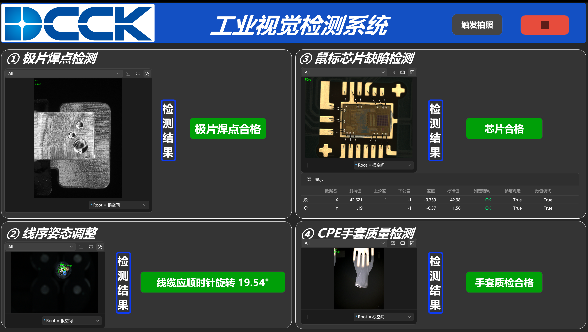
作者提供的原图，3196 × 1812，未改画面。此处展示一次运行：极片、芯片、手套合格；线缆顺时针旋转 19.54°。不作为整集准确率证明。系统结构
依据真实平台流程与 HMI 配置绘制；不添加未实现功能。四项任务图解
以下样例来自竞赛赛题 PDF，说明缺陷类别与任务要求。它们与上方实际运行结果分开标明。
极片焊点检测
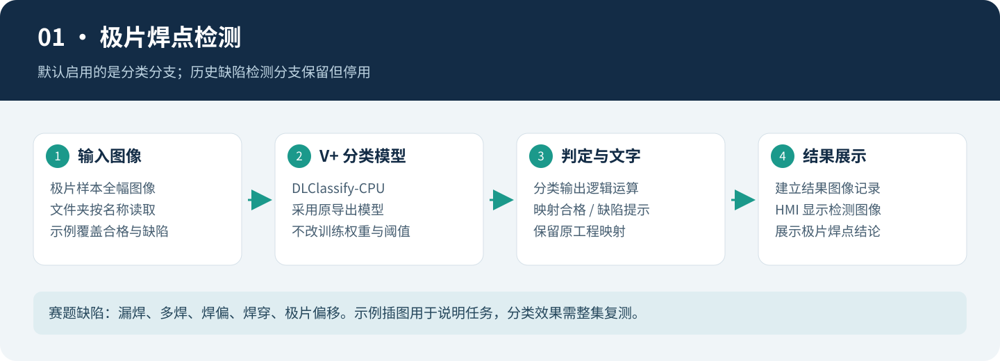
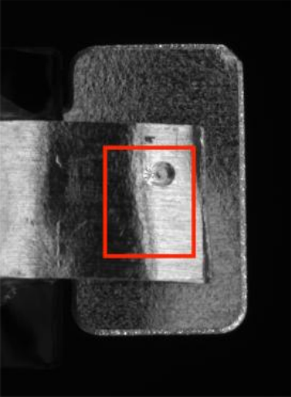
极片：漏焊 · 赛题 PDF 第 4 页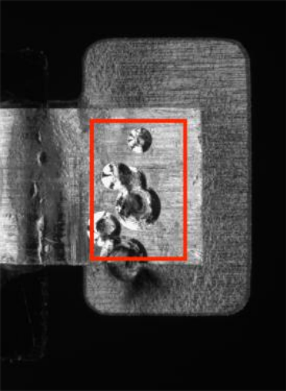
极片：多焊 · 赛题 PDF 第 4 页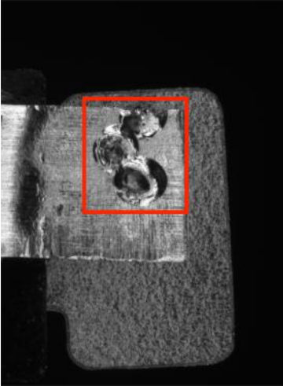
极片：焊偏 · 赛题 PDF 第 4 页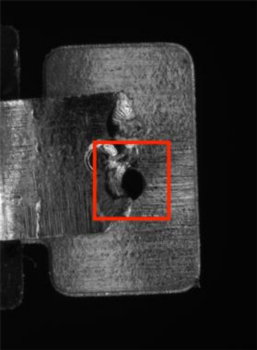
极片：焊穿 · 赛题 PDF 第 4 页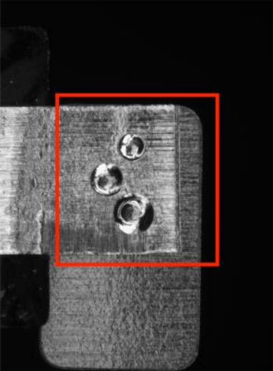
极片：偏移 · 赛题 PDF 第 4 页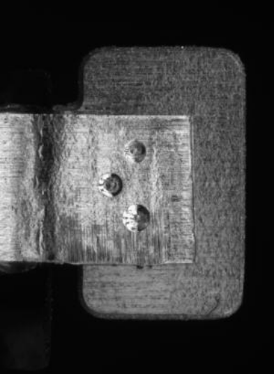
极片：合格 · 赛题 PDF 第 4 页线缆姿态调整
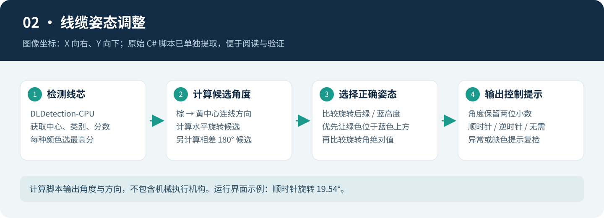
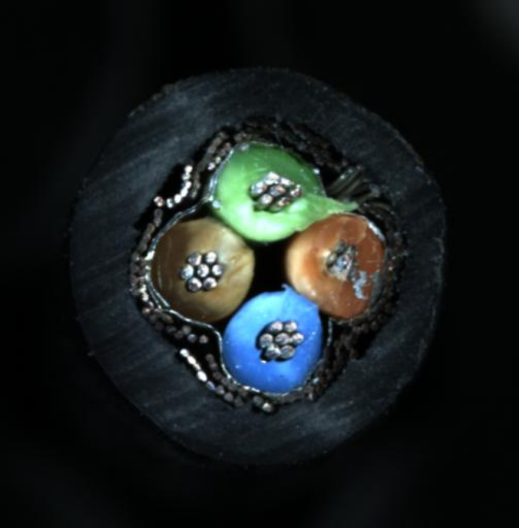
线缆：标准姿态 · 赛题 PDF 第 5 页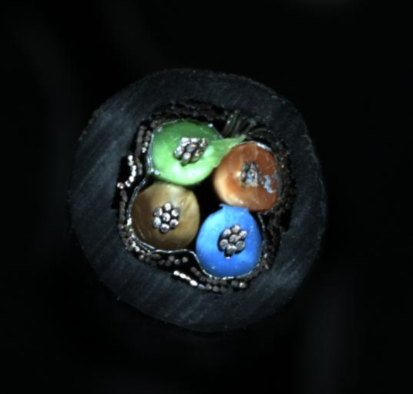
线缆：待旋转 · 赛题 PDF 第 5 页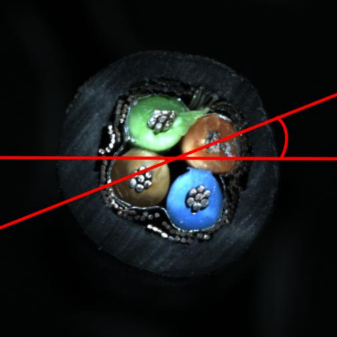
线缆：角度示意 · 赛题 PDF 第 5 页CPE 手套质检
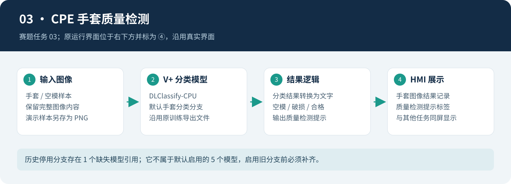
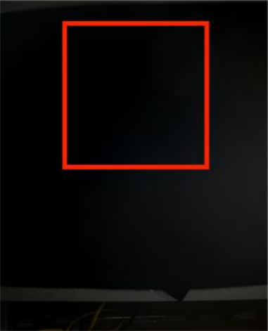
手套：空模 · 赛题 PDF 第 5 页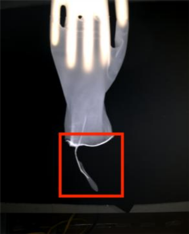
手套：破损 · 赛题 PDF 第 5 页手套：合格 · 赛题 PDF 第 5 页芯片缺陷与位置度
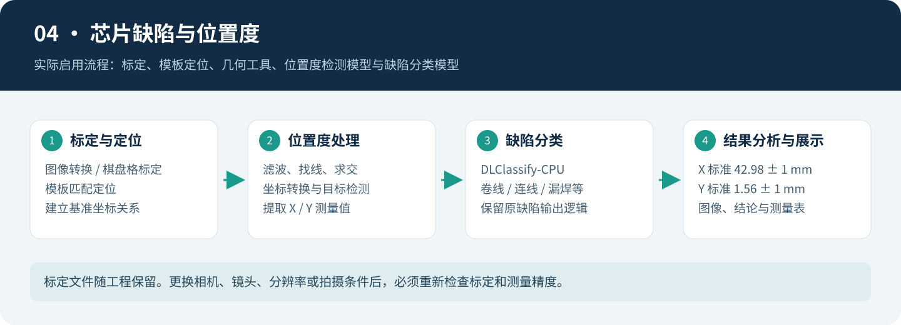
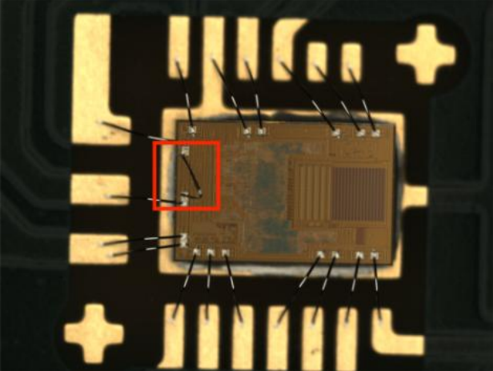
芯片：卷线 · 赛题 PDF 第 6 页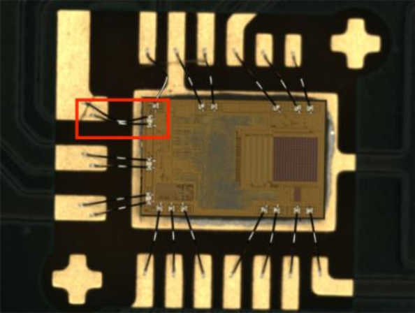
芯片：连线 · 赛题 PDF 第 6 页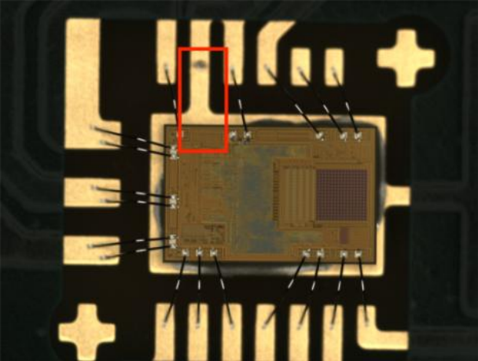
芯片：漏焊 · 赛题 PDF 第 6 页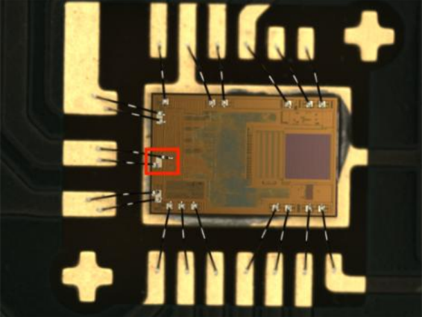
芯片：偏线 · 赛题 PDF 第 6 页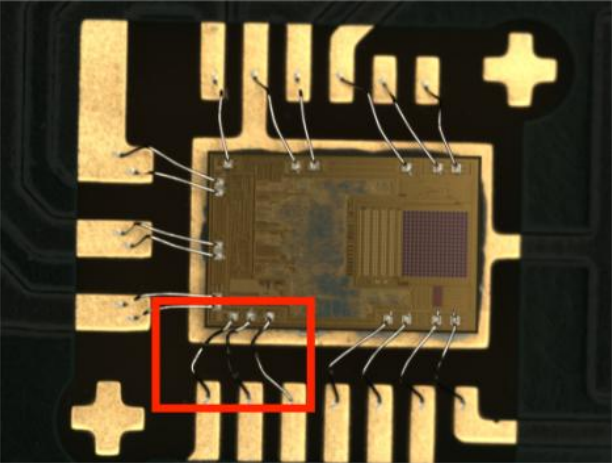
芯片：弯线 · 赛题 PDF 第 6 页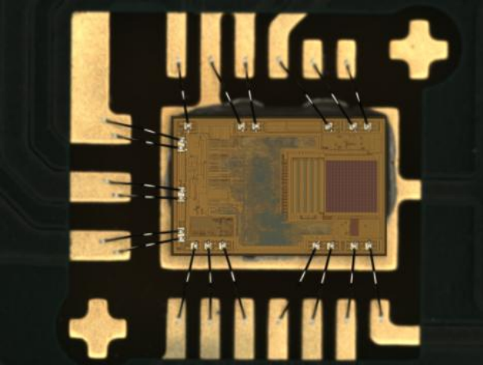
芯片：合格 · 赛题 PDF 第 6 页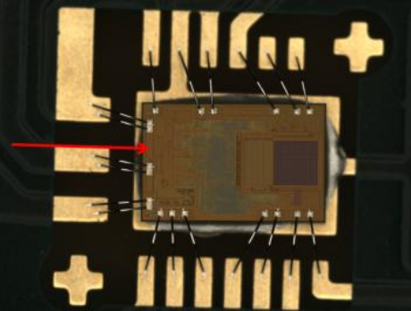
芯片位置：X 基准 · 赛题 PDF 第 6 页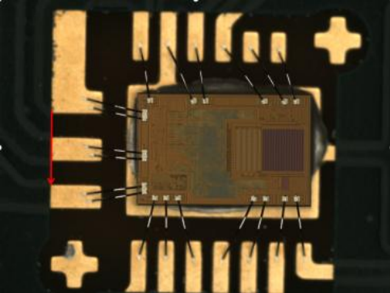
芯片位置：Y 基准 · 赛题 PDF 第 6 页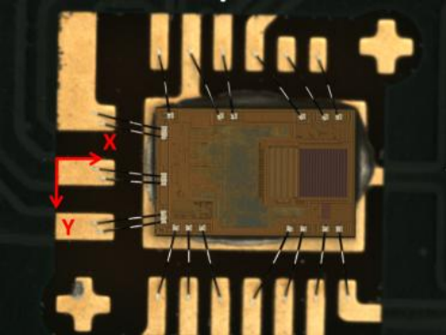
芯片位置：基准总览 · 赛题 PDF 第 6 页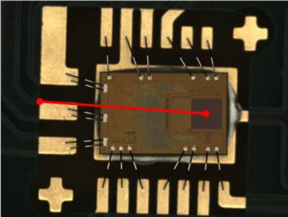
芯片位置：位置度 · 赛题 PDF 第 6 页完整项目内容
17 个训练项目24 个导出模型729 张原始图像10 项脚本检查通过
| 主项目 | 原平台工程、HMI、标定、原始脚本、训练元数据和标注、12 张全幅演示图、说明和图片。 |
|---|
| 配套资源 | 19 个 ZIP，保留全部原图与导出模型；按 SHA-256 校验和恢复。图像去重后为 729 份。 |
|---|
| 许可 | 原创部分采用 MIT，赛题素材与商业平台权利单独说明。 |
|---|
| 待验收 | 实际平台重新加载、四任务联动、测量边界和整集图像推理。停用旧分支有 1 个历史模型缺失。 |
|---|
运行与复现 · 模型和数据清单 · 验证边界 · 授权范围